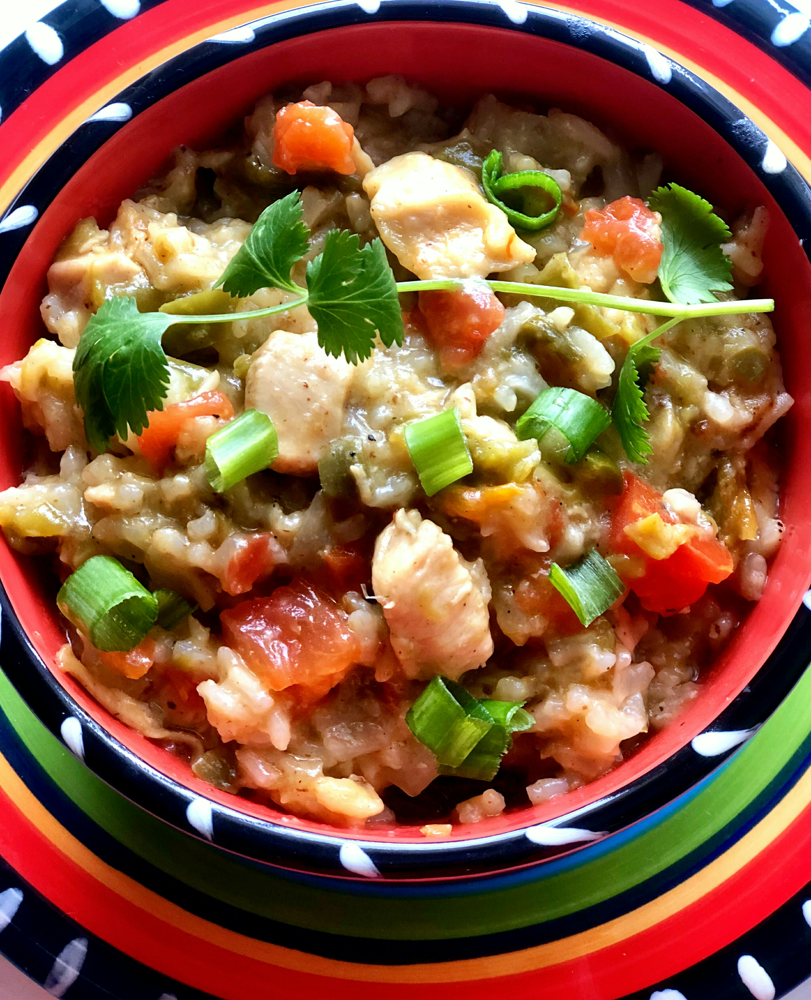

Instant Pot Green Chilli and Rice
This Instant Pot green chili chicken is a great one-pot dish made with three different types of chile peppers — Anaheim, jalapeño, and fire-roasted green chile peppers. For those who like it spicy!
Recipe by Victor Varbanov, credits to allrecipes.com

- Prep: 20 mins
- Cook: 40 mins
- Additional: 5 mins
- Total: 1 hr 5 mins
- Servings: 4
Ingredients
- 1 tablespoon olive oil
- 2 boneless, skinless chicken breasts, cut into 1-inch pieces
- 1 tablespoon all-purpose flour
- 1 (7 ounce) can fire-roasted diced green chile peppers
- 1 (4 ounce) can diced jalapeno peppers
- 1 cup uncooked white rice
- ⅔ cup diced tomato
- ½ cup diced onion
- ½ cup diced Anaheim chile peppers
- ½ cup shredded Cheddar cheese
- 2 teaspoons salt, or more to taste
- 1 teaspoon seasoned salt (such as LAWRY'S®)
- ½ teaspoon freshly ground black pepper, or more to taste
- 2 cups chicken stock
Steps
- Step
Turn on a multi-functional pressure cooker (such as Instant Pot) and select Sauté function. Add olive oil and chicken. Sprinkle with flour and cook until browned on all sides, about 5 minutes. Turn off Sauté function. Add green chile peppers, jalapeños, rice, tomato, onion, Anaheim chile, Cheddar cheese, salt, seasoned salt, and pepper; pour in chicken stock and mix to combine.
- Step
Close and lock the lid. Select high pressure according to manufacturer's instructions; set timer for 18 minutes. Allow 10 to 15 minutes for pressure to build.
- Step
Release pressure carefully using the quick-release method according to manufacturer's instructions, about 5 minutes. Unlock and remove the lid. Adjust seasoning with salt and pepper.